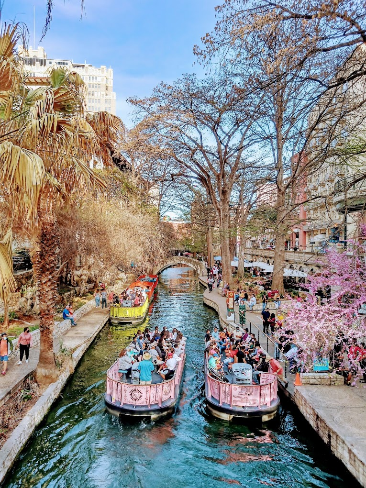

Take a stroll down the river walk
The River Walk is San Antonio's number 1 tourist attraction. Take a boat ride down the river with your loved ones or simply walk. There's plenty to enjoy here and plenty of restaurants to ease those cravings after a long day of walking.